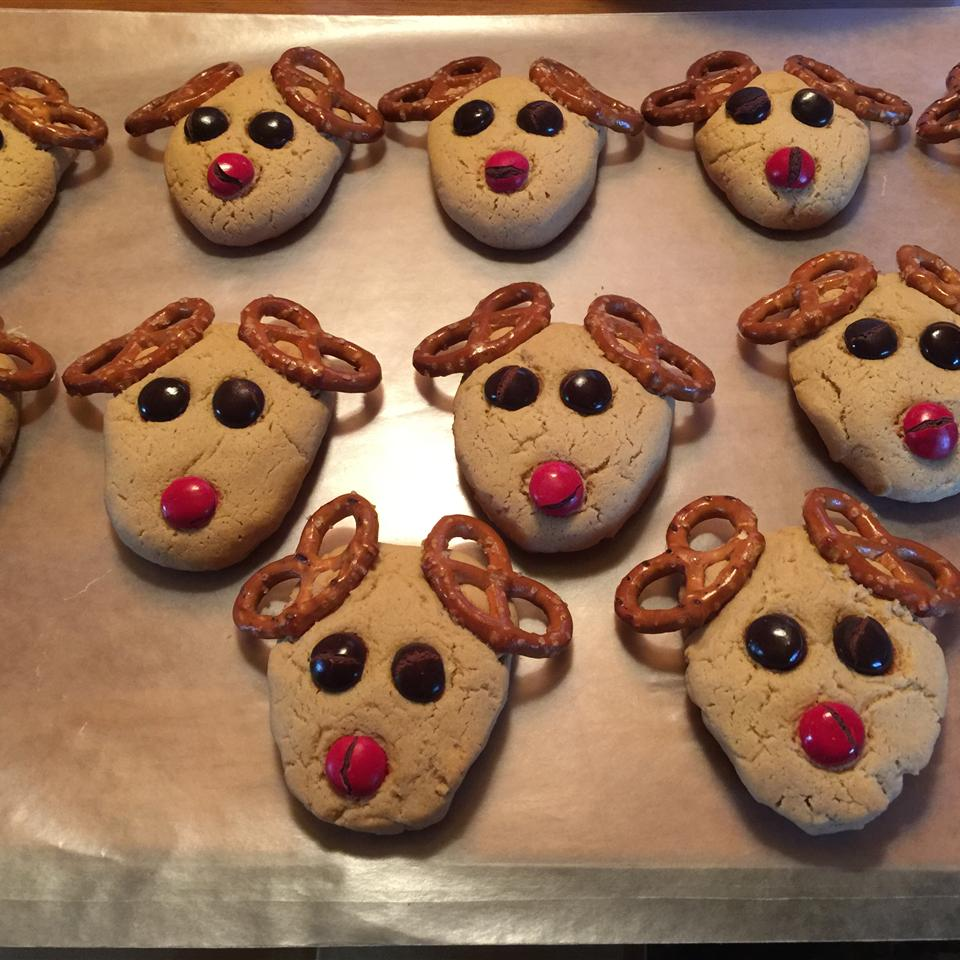

These reindeer cookies are really adorable! Children enjoy making and eating them. Add a red M&M® and make the Rudolph.
Ingredients
1 cup butter, softened
1 cup white sugar
1 cup smooth peanut butter
2 eggs
1 teaspoon vanilla extract
½ teaspoon salt
3 cups all-purpose flour
2 teaspoons baking soda
72 small pretzel twists, or as needed
½ cup chocolate chips, or as needed
Directions
Step 1. Preheat oven to 375 degrees F (190 degrees C).
Step 2. Beat butter, sugar, peanut butter, eggs, vanilla extract, and salt together in a bowl until smooth and creamy. Stir flour and baking soda into creamed butter mixture until well incorporated.
Step 3. Roll dough into 36 balls. Flatten each ball and shape into an upside-down triangle. Press two pretzels into the two top corners of each triangle for the antlers. Press two chocolate chips into the center of each triangle for the eyes, and one chocolate chip or M&M on the bottom of the triangle for the nose. Arrange cookies on baking sheets.
Step 4. Bake in the preheated oven until cookies are golden brown, 10 to 15 minutes.
Nutrition Facts
Per Serving: 208 calories; protein 4.5g; carbohydrates 25.9g; fat 10.2g; cholesterol 23.9mg; sodium 381.6mg.